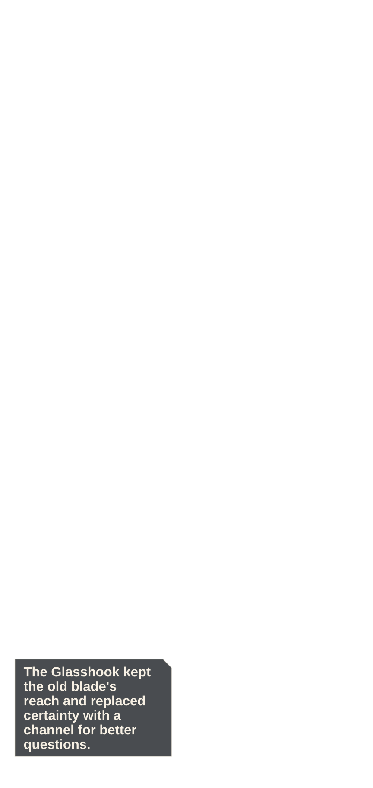
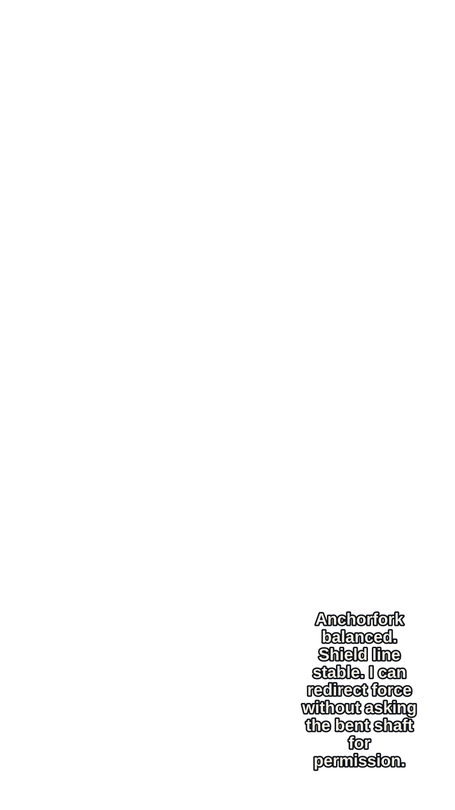
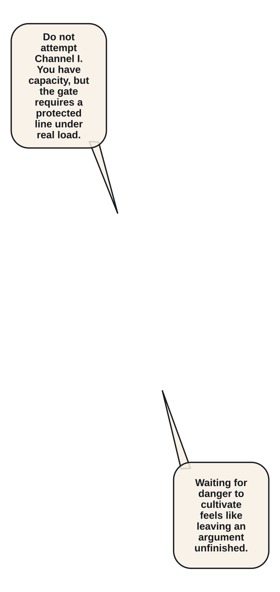
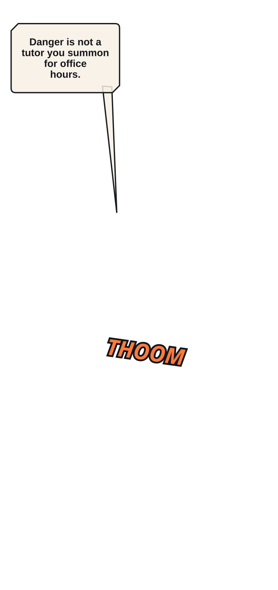
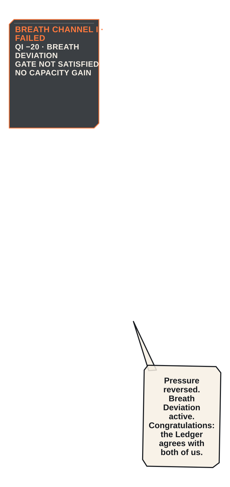

P010 · He strips the hookblade to its black-steel tang while Orin prepares the lens channel.
Read in order: geography → intention → initiation → contact/interruption → consequence → response → adaptation → payoff/state.
P010 · He strips the hookblade to its black-steel tang while Orin prepares the lens channel.


P011 · The forge flashes once as the Glasshook emerges with a pale sight groove and restrained ember edge.


P014 · Mira tests the new Anchorfork Spear against her split shield in one clean planted rotation.


P015 · Elian attempts the Breath Channel gate too early beside the cold forge.


P016 · The pressure reverses at his sternum and throws him to one knee without a breakthrough.


P017 · Breath Deviation appears as a real debuff with reduced regeneration rather than decorative fire.